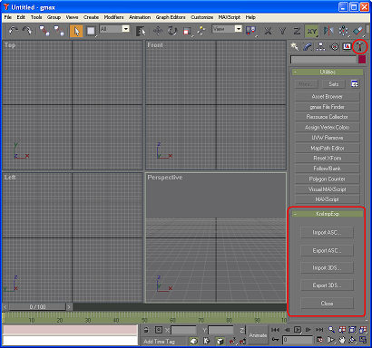

1. Start KrxGMaxExtender.exe instead of gmax.exe. The KrxGMaxExtender is a small program in C++ enabling write-to-file operation in the MAXScript language. The KrxGMaxExtender program internally starts gmax.exe.
KrxGMaxExtender |
2. After starting gmax you will see a new window named "KrxImpExp" in the "Utilities" panel as shown in the picture below. Press one of these four buttons to perform import and export operations.
